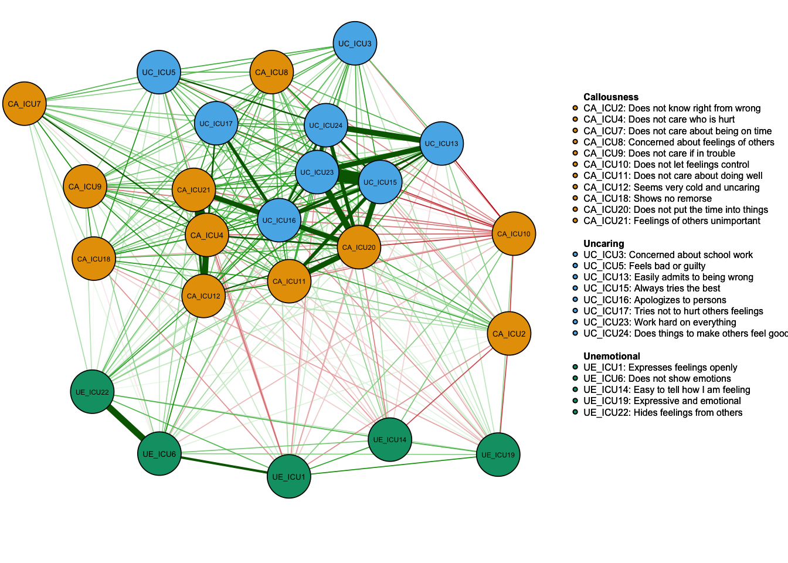
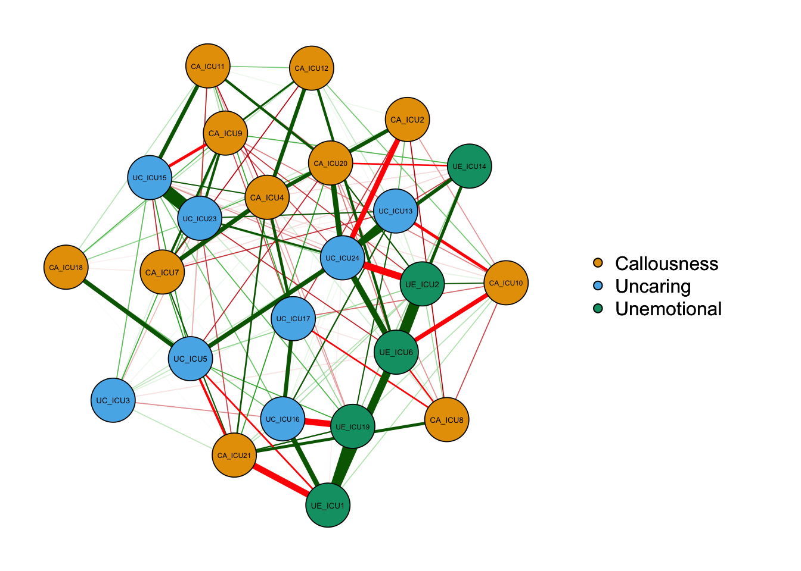
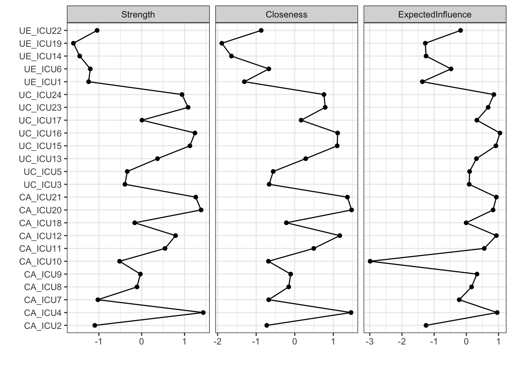
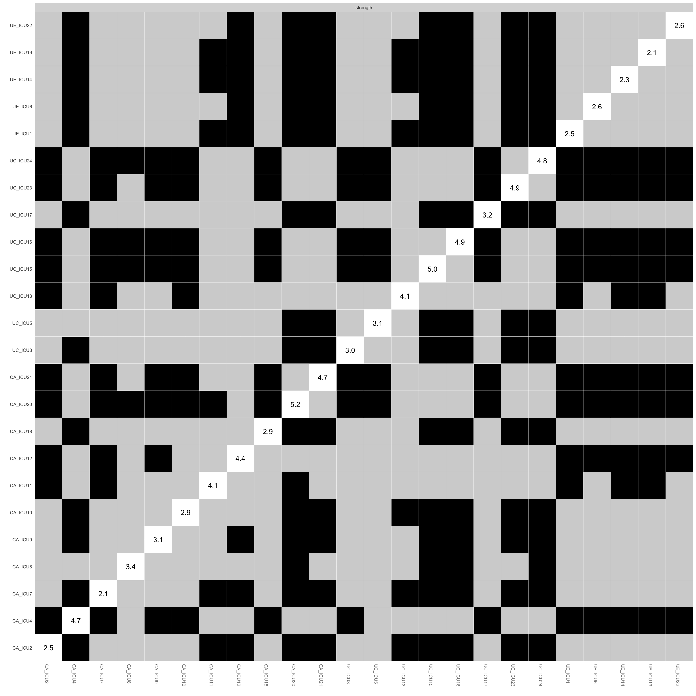

Network Analysis Workshop
Jiaxin Deng
2023/03/09
———- Table of Contents ——————————————————————————————–
———- 1. Network analysis using R ————————————————————–
———- 2. Network basic——————————————————————————
———-Hands-on exercises 1: Practice with example1 data——————————–
———- 3. Network comparison——————————–
———-Hands-on exercises 2: Practice with example2 data——————————–
———- 4. Special issues——————————————————————————————
———- 5. Take-away message————————–
———- 6. Resources——————————————————————————–
1. Network analysis using R
R programming is commonly used in network psychometrics.
Several packages for network analysis include: qgraph
(Epskamp et al., 2012), bootnet (Epskamp et al., 2018),
Network Comparison Test package (NCT; van Borkulo et al.,
2022), EstimateGroupNetwork (Costantini & Epskamp,
2017)
2. Network basic
Brif introduction
The following is an example of how a network analysis study of
callous-unemotional traits was conducted (Deng et al., 2021).
The study analyzed the network structure of the Inventory of
Callous-Unemotional Traits (Wang et al. 2019) in two samples of 609
juvenile prisoners (sample 1) and 487 children (sample 2) in
China.
The example data here was randomly selected from the data of sample
2.
This scale consist of three subscales with 24 items including 是Callousness, Uncaring and Unemotional.
Next, it will show how to use the qgraph and
bootnet packages to perform network analysis of the
data.
2.0.1 Install and load packages
First, you need to install and load the packages.
library(readxl)#install.packages("readxl") for installation
library(qgraph)#install.packages("qgraph")
library(bootnet)#install.packages("bootnet")
library(networktools)2.0.2 Data import
Since the data used in the example is not from the package, it needs
to be imported first.
The readxl package is used to read and import the data in
the .xlsx format. Use the read_excel() function to read the
data with the following code:
#getwd()#check working directory
#setwd("/Users/apple/network analysis workshop")#set working directory
#read data
data1<- read_excel("example1_data_c.xlsx")#demo data
head(data1)[1:5,]## # A tibble: 5 × 24
## UE_ICU1 CA_ICU2 UC_ICU3 CA_ICU4 UC_ICU5 UE_ICU6 CA_ICU7 CA_ICU8 CA_ICU9
## <dbl> <dbl> <dbl> <dbl> <dbl> <dbl> <dbl> <dbl> <dbl>
## 1 2 2 2 2 2 2 1 2 4
## 2 2 2 1 1 2 2 1 1 1
## 3 2 2 2 1 2 1 1 2 1
## 4 2 3 1 1 1 3 1 2 1
## 5 3 1 3 1 2 3 4 4 3
## # ℹ 15 more variables: CA_ICU10 <dbl>, CA_ICU11 <dbl>, CA_ICU12 <dbl>,
## # UC_ICU13 <dbl>, UE_ICU14 <dbl>, UC_ICU15 <dbl>, UC_ICU16 <dbl>,
## # UC_ICU17 <dbl>, CA_ICU18 <dbl>, UE_ICU19 <dbl>, CA_ICU20 <dbl>,
## # CA_ICU21 <dbl>, UE_ICU22 <dbl>, UC_ICU23 <dbl>, UC_ICU24 <dbl>colnames(data1)## [1] "UE_ICU1" "CA_ICU2" "UC_ICU3" "CA_ICU4" "UC_ICU5" "UE_ICU6"
## [7] "CA_ICU7" "CA_ICU8" "CA_ICU9" "CA_ICU10" "CA_ICU11" "CA_ICU12"
## [13] "UC_ICU13" "UE_ICU14" "UC_ICU15" "UC_ICU16" "UC_ICU17" "CA_ICU18"
## [19] "UE_ICU19" "CA_ICU20" "CA_ICU21" "UE_ICU22" "UC_ICU23" "UC_ICU24"Generally, four steps of analysis were carried out in the following
sections.
+ Network Estimation + Network Inference: Centrality indices + Network
Stability + Network Comparison
2.1 Network estimation
Let’s start with the graph of network structure.
2.1.1 Basic graph
The graph is estimated and plotted using qgraph().
Note that the input in qgraph() can be either a weights
matrix or an edgelist. Therefore, create a weights matrix or an edgelist
first, for example cor_auto() to compute a correlation
matrix.
c1=cor_auto(data1)#Compute correlation matrix
qgraph<-qgraph(c1)#no groupingqgraph<-qgraph(cor_auto(data1))#
The white circles in the figure indicate the nodes in the network, with 24 nodes in total, corresponding to the 24 items of the scale. This is a network based on the correlation matrix.
As shown in the figure above, this is a network without defining
groups. If you need to differentiate the nodes, you can use
groups to set the grouping of each node.
For example, define the grouping of the 24 items of the scale.
ICU24groups<-c("Unemotional","Callousness","Uncaring","Callousness",
"Uncaring","Unemotional","Callousness",
"Callousness","Callousness",
"Callousness","Callousness","Callousness","Uncaring","Unemotional",
"Uncaring","Uncaring","Uncaring","Callousness","Unemotional","Callousness",
"Callousness","Unemotional","Uncaring","Uncaring")qgraph(cor_auto(data1), groups= ICU24groups)#with groups
As shown in the figure, the left side is the graph of network
structure, and the right side is the legend of the graph. There are
three colors of nodes in the network, including red, green and blue
corresponding to callousness, uncaring and unemotional.
In addition to the nodes, it can be observed that the edges between the
different nodes showed both green and red lines. Generally, the green
lines indicate positive correlations and the red lines indicate negative
correlations. For example, ICU15 and ICU23 showed a positive correlation
in the figure.
2.1.2 Customized graph
In addition to the grouping, you can also set the format of the graph with other parameters.
(1) Layout
Use layout to change the shape of the graph.
qgraph(cor_auto(data1), groups=ICU24groups, layout= "spring") #spring
qgraph(cor_auto(data1), groups=ICU24groups, layout= "circle")#circle
Also, you can use "palette=" and "theme="
to change the color of the nodes. Note that "palette="
needs to be used together with "groups=".
qgraph(cor_auto(data1), groups=ICU24groups,palette="colorblind",layout= "spring")#palette="colorblind"
qgraph(cor_auto(data1), groups=ICU24groups,palette="pastel",layout= "spring")#"palette="pastel"qgraph(cor_auto(data1), groups=ICU24groups,palette="gray",layout= "spring")#"palette ="gray"In addition to change the color, you can also adjust the rendering of
the result graph for black and white printing. Use the
makeBW() function to set the graph for black-and-white
printing mode, which is suitable for black-and-white printing graph, so
that you can see the differences in the network. The network in BW mode
can be seted with the following characteristics:
1) the solid line refers to a positive correlation while the dashed line
refers to a negative correlation. 2) with the previous colors changing,
it can also increase the distinction between lines, such as red nodes
are diagonal lines, green nodes are vertical lines, blue nodes are
horizontal lines.
qgraph=qgraph(cor_auto(data1), groups=ICU24groups,layout= "spring")#negDashed = TRUE
makeBW(qgraph)#plot in black and white mode(2) Common arguments
In addition to changing the layout of the graph, you can also adjust the presentation of a particular aspect and the way it is presented. For example, node size, node borders, edge colors, the edge weights,legend position and its size, etc.
Here is a list of some parameters that can be used to customize the
graph.
+ "minimum": the number of nodes to be rendered according
to the degree of association between them
+ "borders": whether to render the node borders or
not
+ "vsize": change the size of the node
+ "legend": whether to render the legend and define its
position
1) nodes
Common parameters involved in nodes include: vsize,
node.width,node.height,nodeNames,
borders,border.color,border.width,shape,labels,label.cex, etc.
The options of shape can be circle, square, triangle, rectangle, which
can be adjusted according to the actual situation of node content.
When you need to customize the graph, it can use the above parameters to
customize the settings. The code is displayed as follows:
qgraph(cor_auto(data1),groups=ICU24groups,
layout= "spring",palette="colorblind",
vsize=3,borders=TRUE,shape="rectangle",node.width=2,node.height=1,
legend=TRUE
)
Specific description of nodes
It can also show a more specific illustrations for the reader to understand each node.
Labels<-colnames(data1)
Names<-c("Expresses feelings openly","Does not know right from wrong",
"Concerned about school work","Does not care who is hurt",
"Feels bad or guilty","Does not show emotions","Does not care about being on time",
"Concerned about feelings of others","Does not care if in trouble",
"Does not let feelings control","Does not care about doing well",
"Seems very cold and uncaring","Easily admits to being wrong",
"Easy to tell how I am feeling","Always tries the best",
"Apologizes to persons","Tries not to hurt others feelings",
"Shows no remorse","Expressive and emotional",
"Does not put the time into things","Feelings of others unimportant",
"Hides feelings from others","Work hard on everything",
"Does things to make others feel good")
q_cor_auto1<-qgraph(cor_auto(data1),groups=ICU24groups,cut=0.4,vsize=6,
legend=TRUE,borders=TRUE,layout="spring",
palette="colorblind",
legend.cex=0.25,label.cex=1,
labels=Labels,nodeNames=Names, mar=c(4,1,2,2))
2) Edge
Common parameters involved in edges include: posCol, negCol, negDashed, minimum, etc.
qgraph(cor_auto(data1),groups=ICU24groups,
cut=0.4,vsize=6,
legend=TRUE,borders=TRUE,layout="spring",
palette="colorblind",
legend.cex=0.5,label.cex=1,
minimum=0.2,
negDashed=TRUE,
posCol="#009900",negCol="#BF0000")#customized color3) Options for correlation/covariance matrices
Use graph to set the types, including a correlation
network, a partial correlation network and an optimal sparse estimate of
the partial correlation matrix.
qgraph_cor=qgraph(cor_auto (data1), groups=ICU24groups, layout="spring",
vsize=6,minimum=0.1,
legend=TRUE,borders=TRUE,layout="spring",
palette="colorblind",
legend.cex=0.5,label.cex=1,graph="cor")#Plot a correlation networkqgraph_pcor=qgraph(cor_auto (data1), groups=ICU24groups, layout="spring",
vsize=6,minimum=0.1,
legend=TRUE,borders=TRUE,layout="spring",
palette="colorblind",
legend.cex=0.5,label.cex=1,graph="pcor")#Plot a partial correlation network
Show the significant edges using minimum.
qgraph(cor_auto (data1), groups=ICU24groups, layout="spring",
vsize=6,minimum='sig',
legend=TRUE,borders=TRUE,layout="spring",
palette="colorblind",
legend.cex=0.5,label.cex=1,graph="pcor",sampleSize = nrow(data1))#Plot a partial correlation networkDefine sampleSize when graph = “glasso”.
qgraph_glasso=qgraph(cor_auto (data1), groups=ICU24groups, layout="spring",vsize=6,minimum=0.1,
legend=TRUE,borders=TRUE,layout="spring",
palette="colorblind",
legend.cex=0.5,label.cex=1,
graph="glasso",sampleSize = nrow(data1))#used sampleSize when graph = "glasso" According to the above figure, there are some differences between types of networks, for example,the network based on partial correlation matrix presents fewer edges. The network based on correlation matrix may have some spurious relationships, i.e., some associations between nodes are established by a third node, not two directly connected edges.
(3) Others
Use title to add the title if need.
qgraph(cor_auto(data1),groups=ICU24groups, layout= "spring",minimum=0.15,vsize=5,legend=TRUE,borders=TRUE,palette="colorblind",title="ICU-24 item-level network")Finally, the graph can be saved using filetype for
setting the file type and the path where the file is located.
q_cor_auto1<-qgraph(cor_auto(data1),groups=ICU24groups,minimum=0.15,cut=0.4,vsize=6,
legend=TRUE,borders=TRUE,layout="spring",
palette="colorblind",
legend.cex=0.25,label.cex=1,
labels=Labels,nodeNames=Names,
mar=c(4,1,2,2),#margin：t, r, b, l
height=5,width=5,#size of figure
filetype="jpg",filename="q_cor_auto1")2.1.3 Network estimation using estimateNetwork
- In addition to using
qgraphfor network estimation, it can also useestimateNetworkfunction in thebootnetpackage with types of networks.
(0) Correlation matrix
Network <- estimateNetwork(data1, default = "cor") #default = "cor"-- Correlation matrix
plot(Network, layout = 'spring',groups=ICU24groups,minimum=0.15,cut=0.4,vsize=6,
legend=TRUE,borders=TRUE,
palette="colorblind",
legend.cex=0.25,label.cex=1,height=5,width=5,
labels=Labels,nodeNames=Names, mar=c(4,1,2,2))
(1) Continuous data：GGM
Network_glasso1 <- estimateNetwork(data1, default="EBICglasso") #default
Network_glasso2 <- estimateNetwork(data1, default = "EBICglasso",corMethod = "cor_auto")#glasso using cor_auto
Network_glasso3 <- estimateNetwork(data1, default="EBICglasso",corMethod = "spearman")#glasso using spearman
### First, how similar are polychoric and Pearson?
c1 <- cor(data1)#Pearson
c1b <- cor_auto(data1)#polychoric
cor(c1[lower.tri(c1)], c1b[lower.tri(c1b)], method="spearman") #0.9894448## [1] 0.9894448cor(c1[lower.tri(c1)], c1b[lower.tri(c1b)], method="pearson") #0.9893105## [1] 0.9893105#plot the graph
plot(Network_glasso2, layout = 'spring',groups=ICU24groups,vsize=6,
legend=TRUE,borders=TRUE,minimum=0,
palette="colorblind",
legend.cex=0.25,label.cex=1,height=5,width=5,
labels=Labels,nodeNames=Names, mar=c(4,1,2,2))(2) Mixture data：Mixed graphical model
This type is suitable for the case which different types of data are combined for the analysis.
#Just show the example code here.
#Network_MGM <- estimateNetwork(data1, default="mgm") #Mixed graphical model
#plot the graph
#plot(Network_MGM, layout = 'spring',groups=ICU24groups,vsize=6,
# legend=TRUE,borders=TRUE,minimum=0,
# palette="colorblind",
# legend.cex=0.25,label.cex=1,height=5,width=5,
# labels=Labels,nodeNames=Names, mar=c(4,1,2,2))(3) Dichotomous data: Ising model
#Just show the example code here.
#Network_Ising <- estimateNetwork(data, default="IsingFit")
#plot the graph
#plot(Network_Ising, layout = 'spring',groups=ICU24groups,vsize=6,
# legend=TRUE,borders=TRUE,
# palette="colorblind",
# legend.cex=0.25,label.cex=1,height=5,width=5,
# labels=Labels,nodeNames=Names, mar=c(4,1,2,2))2.2 Network inference: Central indices
2.2.1 Common indices
Central indices of each node can be calculated to understand the
importance of the nodes in the network. It can be calculated by the
function centrality_auto. If you want to visualize the
results, you can use the function centralityPlot to plot
the results.
centrality_auto(q_cor_auto1)#calculate the centrality indices## $node.centrality
## Betweenness Closeness Strength ExpectedInfluence
## UE_ICU1 4 0.006683500 3.042682 0.6643623
## CA_ICU2 10 0.007727112 3.258558 0.9178918
## UC_ICU3 0 0.007837441 4.302024 3.9403335
## CA_ICU4 23 0.011657392 7.016952 5.8967254
## UC_ICU5 1 0.008027049 4.383887 3.9680330
## UE_ICU6 4 0.007824134 3.101818 2.6691180
## CA_ICU7 0 0.007815890 3.364014 3.2416552
## CA_ICU8 0 0.008750105 4.719920 4.1064286
## CA_ICU9 0 0.008841288 4.838225 4.4829329
## CA_ICU10 1 0.007802806 4.117078 -2.9939996
## CA_ICU11 0 0.009918160 5.692668 4.9952917
## CA_ICU12 27 0.011132322 6.058181 5.8453201
## UC_ICU13 5 0.009544492 5.432379 4.4459960
## UE_ICU14 1 0.006079279 2.733965 0.9213153
## UC_ICU15 5 0.011011394 6.554590 5.8080004
## UC_ICU16 7 0.011033408 6.728737 6.0931172
## UC_ICU17 0 0.009330451 4.892427 4.4765480
## CA_ICU18 1 0.008641232 4.640955 3.7278678
## UE_ICU19 1 0.005629272 2.516168 0.8674521
## CA_ICU20 17 0.011682962 6.941936 5.6115900
## CA_ICU21 18 0.011488710 6.757750 5.8420644
## UE_ICU22 3 0.007466808 3.337019 3.3370194
## UC_ICU23 3 0.010453762 6.493677 5.2678536
## UC_ICU24 9 0.010392686 6.280558 5.6678500
##
## $edge.betweenness.centrality
## from to edgebetweenness
## 15 UE_ICU6 CA_ICU12 20
## 168 CA_ICU2 CA_ICU4 15
## 243 CA_ICU4 CA_ICU7 14
## 113 UE_ICU1 CA_ICU21 12
## 122 CA_ICU12 UE_ICU22 12
## 213 CA_ICU2 CA_ICU20 12
## 212 CA_ICU2 UE_ICU19 10
## 8 UC_ICU5 UC_ICU24 7
## 61 CA_ICU8 CA_ICU21 7
## 84 CA_ICU10 UC_ICU13 7
## 143 UE_ICU14 CA_ICU20 7
## 249 CA_ICU4 CA_ICU12 7
## 90 UE_ICU1 UE_ICU19 6
## 111 CA_ICU12 UC_ICU13 6
## 222 UE_ICU1 UE_ICU6 6
## 43 CA_ICU7 CA_ICU21 5
## 106 CA_ICU11 CA_ICU20 5
## 145 UE_ICU14 UE_ICU22 5
## 161 UC_ICU16 UE_ICU19 5
## 67 CA_ICU9 CA_ICU12 4
## 86 CA_ICU10 UC_ICU15 4
## 97 CA_ICU11 CA_ICU12 4
## 115 CA_ICU12 UC_ICU15 4
## 121 CA_ICU12 CA_ICU21 4
## 128 UC_ICU13 UC_ICU16 4
## 153 UC_ICU15 CA_ICU20 4
## 164 UC_ICU16 UE_ICU22 4
## 189 CA_ICU20 UC_ICU23 4
## 192 CA_ICU21 UE_ICU22 4
## 206 CA_ICU2 UE_ICU14 4
## 240 UC_ICU3 UC_ICU24 4
## 246 CA_ICU4 CA_ICU9 4
## 254 CA_ICU4 UC_ICU17 4
## 28 UE_ICU6 UC_ICU24 3
## 80 CA_ICU9 UC_ICU23 3
## 117 CA_ICU12 UC_ICU17 3
## 118 CA_ICU12 CA_ICU18 3
## 120 CA_ICU12 CA_ICU20 3
## 125 CA_ICU12 UC_ICU24 3
## 137 UC_ICU13 UC_ICU24 3
## 148 UE_ICU14 UC_ICU24 3
## 166 UC_ICU16 UC_ICU24 3
## 171 UC_ICU17 CA_ICU21 3
## 187 CA_ICU20 CA_ICU21 3
## 191 CA_ICU20 UC_ICU24 3
## 194 CA_ICU21 UC_ICU24 3
## 230 UC_ICU3 UC_ICU15 3
## 237 UC_ICU3 CA_ICU21 3
## 256 CA_ICU4 CA_ICU18 3
## 259 CA_ICU4 CA_ICU21 3
## 274 UC_ICU5 UC_ICU16 3
## 276 UC_ICU5 CA_ICU18 3
## 54 CA_ICU8 UC_ICU15 2
## 74 CA_ICU9 CA_ICU18 2
## 76 CA_ICU9 CA_ICU20 2
## 85 CA_ICU10 UE_ICU14 2
## 92 CA_ICU10 CA_ICU20 2
## 95 CA_ICU10 UC_ICU23 2
## 100 CA_ICU11 UC_ICU15 2
## 107 CA_ICU11 CA_ICU21 2
## 116 CA_ICU12 UC_ICU16 2
## 123 CA_ICU12 UC_ICU23 2
## 124 UE_ICU1 UE_ICU22 2
## 127 UC_ICU13 UC_ICU15 2
## 132 UC_ICU13 CA_ICU20 2
## 133 UC_ICU13 CA_ICU21 2
## 136 UC_ICU13 UC_ICU23 2
## 154 UC_ICU15 CA_ICU21 2
## 156 UC_ICU15 UC_ICU23 2
## 159 UC_ICU16 UC_ICU17 2
## 160 UC_ICU16 CA_ICU18 2
## 162 UC_ICU16 CA_ICU20 2
## 163 UC_ICU16 CA_ICU21 2
## 165 UC_ICU16 UC_ICU23 2
## 170 UC_ICU17 CA_ICU20 2
## 176 CA_ICU18 CA_ICU20 2
## 180 CA_ICU18 UC_ICU23 2
## 202 CA_ICU2 CA_ICU10 2
## 219 UC_ICU3 UC_ICU5 2
## 236 UC_ICU3 CA_ICU20 2
## 241 CA_ICU4 UC_ICU5 2
## 245 CA_ICU4 CA_ICU8 2
## 247 CA_ICU4 CA_ICU10 2
## 250 CA_ICU4 UC_ICU13 2
## 252 CA_ICU4 UC_ICU15 2
## 253 CA_ICU4 UC_ICU16 2
## 258 CA_ICU4 CA_ICU20 2
## 262 CA_ICU4 UC_ICU24 2
## 273 UC_ICU5 UC_ICU15 2
## 7 UC_ICU5 UC_ICU23 1
## 17 UE_ICU6 UE_ICU14 1
## 26 UE_ICU6 UE_ICU22 1
## 30 CA_ICU7 CA_ICU9 1
## 35 UE_ICU1 UE_ICU14 1
## 45 CA_ICU7 UC_ICU23 1
## 48 CA_ICU8 CA_ICU9 1
## 50 CA_ICU8 CA_ICU11 1
## 52 CA_ICU8 UC_ICU13 1
## 53 CA_ICU8 UE_ICU14 1
## 55 CA_ICU8 UC_ICU16 1
## 58 CA_ICU8 CA_ICU18 1
## 59 CA_ICU8 UE_ICU19 1
## 62 CA_ICU8 UE_ICU22 1
## 63 CA_ICU8 UC_ICU23 1
## 64 CA_ICU8 UC_ICU24 1
## 65 CA_ICU9 CA_ICU10 1
## 66 CA_ICU9 CA_ICU11 1
## 72 CA_ICU9 UC_ICU16 1
## 77 CA_ICU9 CA_ICU21 1
## 79 UE_ICU1 CA_ICU18 1
## 81 CA_ICU9 UC_ICU24 1
## 88 CA_ICU10 UC_ICU17 1
## 93 CA_ICU10 CA_ICU21 1
## 102 CA_ICU11 UC_ICU16 1
## 103 CA_ICU11 UC_ICU17 1
## 104 CA_ICU11 CA_ICU18 1
## 109 CA_ICU11 UC_ICU23 1
## 110 CA_ICU11 UC_ICU24 1
## 129 UC_ICU13 UC_ICU17 1
## 135 UE_ICU1 UC_ICU23 1
## 142 UE_ICU14 UE_ICU19 1
## 149 UC_ICU15 UC_ICU16 1
## 150 UC_ICU15 UC_ICU17 1
## 151 UC_ICU15 CA_ICU18 1
## 158 UC_ICU15 UC_ICU24 1
## 167 UC_ICU17 CA_ICU18 1
## 173 UC_ICU17 UC_ICU23 1
## 174 UC_ICU17 UC_ICU24 1
## 175 CA_ICU18 UE_ICU19 1
## 177 CA_ICU18 CA_ICU21 1
## 181 CA_ICU18 UC_ICU24 1
## 193 CA_ICU21 UC_ICU23 1
## 197 UC_ICU23 UC_ICU24 1
## 211 UE_ICU1 UC_ICU5 1
## 218 UC_ICU3 CA_ICU4 1
## 221 UC_ICU3 CA_ICU7 1
## 223 UC_ICU3 CA_ICU8 1
## 224 UC_ICU3 CA_ICU9 1
## 226 UC_ICU3 CA_ICU11 1
## 228 UC_ICU3 UC_ICU13 1
## 232 UC_ICU3 UC_ICU17 1
## 235 UC_ICU3 UE_ICU19 1
## 239 UC_ICU3 UC_ICU23 1
## 248 CA_ICU4 CA_ICU11 1
## 261 CA_ICU4 UC_ICU23 1
## 264 UC_ICU5 CA_ICU7 1
## 265 UC_ICU5 CA_ICU8 1
## 266 UE_ICU1 CA_ICU10 1
## 269 UC_ICU5 CA_ICU11 1
## 275 UC_ICU5 UC_ICU17 1
## 1 UE_ICU1 CA_ICU2 0
## 2 UE_ICU1 CA_ICU11 0
## 3 UC_ICU5 UE_ICU19 0
## 4 UC_ICU5 CA_ICU20 0
## 5 UC_ICU5 CA_ICU21 0
## 6 UC_ICU5 UE_ICU22 0
## 9 UE_ICU6 CA_ICU7 0
## 10 UE_ICU6 CA_ICU8 0
## 11 UE_ICU6 CA_ICU9 0
## 12 UE_ICU6 CA_ICU10 0
## 13 UE_ICU1 CA_ICU12 0
## 14 UE_ICU6 CA_ICU11 0
## 16 UE_ICU6 UC_ICU13 0
## 18 UE_ICU6 UC_ICU15 0
## 19 UE_ICU6 UC_ICU16 0
## 20 UE_ICU6 UC_ICU17 0
## 21 UE_ICU6 CA_ICU18 0
## 22 UE_ICU6 UE_ICU19 0
## 23 UE_ICU6 CA_ICU20 0
## 24 UE_ICU1 UC_ICU13 0
## 25 UE_ICU6 CA_ICU21 0
## 27 UE_ICU6 UC_ICU23 0
## 29 CA_ICU7 CA_ICU8 0
## 31 CA_ICU7 CA_ICU10 0
## 32 CA_ICU7 CA_ICU11 0
## 33 CA_ICU7 CA_ICU12 0
## 34 CA_ICU7 UC_ICU13 0
## 36 CA_ICU7 UE_ICU14 0
## 37 CA_ICU7 UC_ICU15 0
## 38 CA_ICU7 UC_ICU16 0
## 39 CA_ICU7 UC_ICU17 0
## 40 CA_ICU7 CA_ICU18 0
## 41 CA_ICU7 UE_ICU19 0
## 42 CA_ICU7 CA_ICU20 0
## 44 CA_ICU7 UE_ICU22 0
## 46 UE_ICU1 UC_ICU15 0
## 47 CA_ICU7 UC_ICU24 0
## 49 CA_ICU8 CA_ICU10 0
## 51 CA_ICU8 CA_ICU12 0
## 56 CA_ICU8 UC_ICU17 0
## 57 UE_ICU1 UC_ICU16 0
## 60 CA_ICU8 CA_ICU20 0
## 68 UE_ICU1 UC_ICU17 0
## 69 CA_ICU9 UC_ICU13 0
## 70 CA_ICU9 UE_ICU14 0
## 71 CA_ICU9 UC_ICU15 0
## 73 CA_ICU9 UC_ICU17 0
## 75 CA_ICU9 UE_ICU19 0
## 78 CA_ICU9 UE_ICU22 0
## 82 CA_ICU10 CA_ICU11 0
## 83 CA_ICU10 CA_ICU12 0
## 87 CA_ICU10 UC_ICU16 0
## 89 CA_ICU10 CA_ICU18 0
## 91 CA_ICU10 UE_ICU19 0
## 94 CA_ICU10 UE_ICU22 0
## 96 CA_ICU10 UC_ICU24 0
## 98 CA_ICU11 UC_ICU13 0
## 99 CA_ICU11 UE_ICU14 0
## 101 UE_ICU1 CA_ICU20 0
## 105 CA_ICU11 UE_ICU19 0
## 108 CA_ICU11 UE_ICU22 0
## 112 UE_ICU1 UC_ICU3 0
## 114 CA_ICU12 UE_ICU14 0
## 119 CA_ICU12 UE_ICU19 0
## 126 UC_ICU13 UE_ICU14 0
## 130 UC_ICU13 CA_ICU18 0
## 131 UC_ICU13 UE_ICU19 0
## 134 UC_ICU13 UE_ICU22 0
## 138 UE_ICU14 UC_ICU15 0
## 139 UE_ICU14 UC_ICU16 0
## 140 UE_ICU14 UC_ICU17 0
## 141 UE_ICU14 CA_ICU18 0
## 144 UE_ICU14 CA_ICU21 0
## 146 UE_ICU1 UC_ICU24 0
## 147 UE_ICU14 UC_ICU23 0
## 152 UC_ICU15 UE_ICU19 0
## 155 UC_ICU15 UE_ICU22 0
## 157 CA_ICU2 UC_ICU3 0
## 169 UC_ICU17 UE_ICU19 0
## 172 UC_ICU17 UE_ICU22 0
## 178 CA_ICU18 UE_ICU22 0
## 179 CA_ICU2 UC_ICU5 0
## 182 UE_ICU19 CA_ICU20 0
## 183 UE_ICU19 CA_ICU21 0
## 184 UE_ICU19 UE_ICU22 0
## 185 UE_ICU19 UC_ICU23 0
## 186 UE_ICU19 UC_ICU24 0
## 188 CA_ICU20 UE_ICU22 0
## 190 CA_ICU2 UE_ICU6 0
## 195 UE_ICU22 UC_ICU23 0
## 196 UE_ICU22 UC_ICU24 0
## 198 CA_ICU2 CA_ICU7 0
## 199 CA_ICU2 CA_ICU8 0
## 200 UE_ICU1 CA_ICU4 0
## 201 CA_ICU2 CA_ICU9 0
## 203 CA_ICU2 CA_ICU11 0
## 204 CA_ICU2 CA_ICU12 0
## 205 CA_ICU2 UC_ICU13 0
## 207 CA_ICU2 UC_ICU15 0
## 208 CA_ICU2 UC_ICU16 0
## 209 CA_ICU2 UC_ICU17 0
## 210 CA_ICU2 CA_ICU18 0
## 214 CA_ICU2 CA_ICU21 0
## 215 CA_ICU2 UE_ICU22 0
## 216 CA_ICU2 UC_ICU23 0
## 217 CA_ICU2 UC_ICU24 0
## 220 UC_ICU3 UE_ICU6 0
## 225 UC_ICU3 CA_ICU10 0
## 227 UC_ICU3 CA_ICU12 0
## 229 UC_ICU3 UE_ICU14 0
## 231 UC_ICU3 UC_ICU16 0
## 233 UE_ICU1 CA_ICU7 0
## 234 UC_ICU3 CA_ICU18 0
## 238 UC_ICU3 UE_ICU22 0
## 242 CA_ICU4 UE_ICU6 0
## 244 UE_ICU1 CA_ICU8 0
## 251 CA_ICU4 UE_ICU14 0
## 255 UE_ICU1 CA_ICU9 0
## 257 CA_ICU4 UE_ICU19 0
## 260 CA_ICU4 UE_ICU22 0
## 263 UC_ICU5 UE_ICU6 0
## 267 UC_ICU5 CA_ICU9 0
## 268 UC_ICU5 CA_ICU10 0
## 270 UC_ICU5 CA_ICU12 0
## 271 UC_ICU5 UC_ICU13 0
## 272 UC_ICU5 UE_ICU14 0
##
## $ShortestPathLengths
## UE_ICU1 CA_ICU2 UC_ICU3 CA_ICU4 UC_ICU5 UE_ICU6 CA_ICU7
## UE_ICU1 0.000000 6.558080 9.397831 6.557969 9.234843 2.319575 7.830404
## CA_ICU2 6.558080 0.000000 6.999663 3.299494 7.514334 7.845910 5.761430
## UC_ICU3 9.397831 6.999663 0.000000 4.448827 3.546733 8.232967 4.122055
## CA_ICU4 6.557969 3.299494 4.448827 0.000000 4.214840 4.546416 2.461937
## UC_ICU5 9.234843 7.514334 3.546733 4.214840 0.000000 7.696026 4.190931
## UE_ICU6 2.319575 7.845910 8.232967 4.546416 7.696026 0.000000 7.008353
## CA_ICU7 7.830404 5.761430 4.122055 2.461937 4.190931 7.008353 0.000000
## CA_ICU8 7.330949 7.039395 3.822751 3.739901 3.956307 7.429961 5.503282
## CA_ICU9 7.643384 6.042730 3.768576 2.743236 5.891856 5.323809 2.656349
## CA_ICU10 6.209347 3.694029 6.523051 4.721751 6.352495 8.510333 7.183688
## CA_ICU11 7.447474 5.338102 4.045920 3.309527 3.618987 5.127899 5.693120
## CA_ICU12 4.925829 5.239656 5.803200 1.940162 5.393334 2.606254 4.402099
## UC_ICU13 8.030226 6.011765 4.457349 3.466408 4.403983 5.785822 5.928344
## UE_ICU14 3.218940 4.041501 9.644139 7.340994 9.107198 5.338928 9.802931
## UC_ICU15 7.487940 5.325011 3.125417 2.514129 2.954861 5.284037 4.976066
## UC_ICU16 7.278665 5.530139 5.328474 2.572630 3.666856 5.162746 5.034567
## UC_ICU17 7.705280 5.753058 4.209285 2.453564 5.095508 5.632962 4.915501
## CA_ICU18 7.029388 6.381204 6.417921 3.081711 2.871188 5.812198 5.543647
## UE_ICU19 2.636166 3.921914 9.568552 7.221408 10.694412 4.955741 9.683344
## CA_ICU20 6.863554 3.337892 3.661771 2.411509 4.614389 5.078243 4.873445
## CA_ICU21 4.829036 5.028427 4.568795 1.728934 5.177351 4.928048 3.001369
## UE_ICU22 4.095927 7.998990 8.654693 5.049764 7.702943 1.902461 7.087266
## UC_ICU23 7.424045 5.238481 4.268740 2.947765 4.240386 6.023981 4.812821
## UC_ICU24 7.567363 5.513258 2.975964 3.009603 2.439024 5.257002 5.471539
## CA_ICU8 CA_ICU9 CA_ICU10 CA_ICU11 CA_ICU12 UC_ICU13 UE_ICU14
## UE_ICU1 7.330949 7.643384 6.209347 7.447474 4.925829 8.030226 3.218940
## CA_ICU2 7.039395 6.042730 3.694029 5.338102 5.239656 6.011765 4.041501
## UC_ICU3 3.822751 3.768576 6.523051 4.045920 5.803200 4.457349 9.644139
## CA_ICU4 3.739901 2.743236 4.721751 3.309527 1.940162 3.466408 7.340994
## UC_ICU5 3.956307 5.891856 6.352495 3.618987 5.393334 4.403983 9.107198
## UE_ICU6 7.429961 5.323809 8.510333 5.127899 2.606254 5.785822 5.338928
## CA_ICU7 5.503282 2.656349 7.183688 5.693120 4.402099 5.928344 9.802931
## CA_ICU8 0.000000 4.369469 6.343995 4.608575 4.823707 3.899993 6.587352
## CA_ICU9 4.369469 0.000000 5.629166 3.352518 2.717555 5.429410 9.511896
## CA_ICU10 6.343995 5.629166 0.000000 5.505354 5.904079 2.724511 5.340339
## CA_ICU11 4.608575 3.352518 5.505354 0.000000 2.521645 4.593544 8.041155
## CA_ICU12 4.823707 2.717555 5.904079 2.521645 0.000000 3.179568 7.067091
## UC_ICU13 3.899993 5.429410 2.724511 4.593544 3.179568 0.000000 8.064850
## UE_ICU14 6.587352 9.511896 5.340339 8.041155 7.067091 8.064850 0.000000
## UC_ICU15 2.946361 4.903325 3.397634 2.199502 2.677783 2.394042 8.028065
## UC_ICU16 3.380170 3.963647 5.074088 2.860689 2.556492 2.349577 7.993576
## UC_ICU17 5.378158 5.196800 4.809090 3.113095 3.026708 3.218615 9.130227
## CA_ICU18 5.410778 3.020668 6.857392 2.918898 3.205944 5.307529 9.874816
## UE_ICU19 7.645634 9.964644 7.615943 9.260016 7.561995 9.377133 3.707663
## CA_ICU20 4.536432 3.470950 3.505145 2.000210 2.471989 2.673872 6.040946
## CA_ICU21 2.501913 2.957031 5.194478 2.691752 2.321794 3.201190 8.043386
## UE_ICU22 6.456614 5.827157 9.013680 5.631247 3.109602 6.289170 3.957489
## UC_ICU23 3.726193 3.408796 3.359961 3.554615 3.417727 2.020615 7.941535
## UC_ICU24 2.846458 5.312724 4.689470 3.391312 2.954310 1.964959 6.668175
## UC_ICU15 UC_ICU16 UC_ICU17 CA_ICU18 UE_ICU19 CA_ICU20 CA_ICU21
## UE_ICU1 7.487940 7.278665 7.705280 7.029388 2.636166 6.863554 4.829036
## CA_ICU2 5.325011 5.530139 5.753058 6.381204 3.921914 3.337892 5.028427
## UC_ICU3 3.125417 5.328474 4.209285 6.417921 9.568552 3.661771 4.568795
## CA_ICU4 2.514129 2.572630 2.453564 3.081711 7.221408 2.411509 1.728934
## UC_ICU5 2.954861 3.666856 5.095508 2.871188 10.694412 4.614389 5.177351
## UE_ICU6 5.284037 5.162746 5.632962 5.812198 4.955741 5.078243 4.928048
## CA_ICU7 4.976066 5.034567 4.915501 5.543647 9.683344 4.873445 3.001369
## CA_ICU8 2.946361 3.380170 5.378158 5.410778 7.645634 4.536432 2.501913
## CA_ICU9 4.903325 3.963647 5.196800 3.020668 9.964644 3.470950 2.957031
## CA_ICU10 3.397634 5.074088 4.809090 6.857392 7.615943 3.505145 5.194478
## CA_ICU11 2.199502 2.860689 3.113095 2.918898 9.260016 2.000210 2.691752
## CA_ICU12 2.677783 2.556492 3.026708 3.205944 7.561995 2.471989 2.321794
## UC_ICU13 2.394042 2.349577 3.218615 5.307529 9.377133 2.673872 3.201190
## UE_ICU14 8.028065 7.993576 9.130227 9.874816 3.707663 6.040946 8.043386
## UC_ICU15 0.000000 2.263900 2.813545 3.961738 9.246925 1.987119 2.658905
## UC_ICU16 2.263900 0.000000 2.227502 2.957952 7.027556 2.192247 2.449630
## UC_ICU17 2.813545 2.227502 0.000000 4.545599 9.255058 3.089281 2.876244
## CA_ICU18 3.961738 2.957952 4.545599 0.000000 8.301211 3.833871 3.281713
## UE_ICU19 9.246925 7.027556 9.255058 8.301211 0.000000 7.259806 7.465201
## CA_ICU20 1.987119 2.192247 3.089281 3.833871 7.259806 0.000000 2.034519
## CA_ICU21 2.658905 2.449630 2.876244 3.281713 7.465201 2.034519 0.000000
## UE_ICU22 5.787385 4.036087 6.136310 6.315545 6.732093 5.581590 4.085897
## UC_ICU23 1.494529 2.374130 2.992727 3.497431 9.160395 1.900589 3.278032
## UC_ICU24 2.386808 2.352510 3.601842 5.295890 9.380066 2.175365 2.738328
## UE_ICU22 UC_ICU23 UC_ICU24
## UE_ICU1 4.095927 7.424045 7.567363
## CA_ICU2 7.998990 5.238481 5.513258
## UC_ICU3 8.654693 4.268740 2.975964
## CA_ICU4 5.049764 2.947765 3.009603
## UC_ICU5 7.702943 4.240386 2.439024
## UE_ICU6 1.902461 6.023981 5.257002
## CA_ICU7 7.087266 4.812821 5.471539
## CA_ICU8 6.456614 3.726193 2.846458
## CA_ICU9 5.827157 3.408796 5.312724
## CA_ICU10 9.013680 3.359961 4.689470
## CA_ICU11 5.631247 3.554615 3.391312
## CA_ICU12 3.109602 3.417727 2.954310
## UC_ICU13 6.289170 2.020615 1.964959
## UE_ICU14 3.957489 7.941535 6.668175
## UC_ICU15 5.787385 1.494529 2.386808
## UC_ICU16 4.036087 2.374130 2.352510
## UC_ICU17 6.136310 2.992727 3.601842
## CA_ICU18 6.315545 3.497431 5.295890
## UE_ICU19 6.732093 9.160395 9.380066
## CA_ICU20 5.581590 1.900589 2.175365
## CA_ICU21 4.085897 3.278032 2.738328
## UE_ICU22 0.000000 6.410217 6.063912
## UC_ICU23 6.410217 0.000000 2.165632
## UC_ICU24 6.063912 2.165632 0.000000
##
## attr(,"class")
## [1] "list" "centrality_auto"centralityPlot(q_cor_auto1,include=c("Strength","Closeness","Betweenness"))#include three statistics using raw scores
centralityPlot(q_cor_auto1,include=c("Strength","Closeness","Betweenness"),
scale = "z-scores")#using z scores
#add Expected influence
centralityPlot(q_cor_auto1,include=c("Strength","Closeness","ExpectedInfluence"),
scale = "z-scores")
The above figure shows the visualization of all nodes in the network on the central indices of strength, closeness, and betweenness. As shown in the figure, the vertical axis represents all nodes and the horizontal coordinates represent the standardized scores of node centrality.
In addition to this, the order of the nodes on the vertical axis can
be specified using orderBy. The default is
alphabetical order, but if you need to order the nodes
by one central index, you can adjust it with
orderBy="Strength".
centralityPlot(q_cor_auto1,include=c("Strength","Closeness"),
scale = "z-scores",orderBy="Strength")#node order## Note: z-scores are shown on x-axis rather than raw centrality indices.If you want to compare the the central indices of different network, you can use the code like this:
centralityPlot(list(cor=qgraph_cor,
pcor = qgraph_pcor, glasso=qgraph_glasso),
include=c("Strength","Closeness","Betweenness"),
scale = "z-scores")qgraph::centralityPlot(list(correlation_network=Network,EBICglasso_default= Network_glasso1,EBICglasso_corauto= Network_glasso2, EBICglasso_spearman=Network_glasso3),include=c("Strength","Closeness","Betweenness"), scale = "z-scores",labels=Labels)From the figure, it can be seen that the correlation matrix and
glasso networks are relatively close, and the pcor network are more
different. Therefore, it should be paid attention to consider the type
of networks possibly with variable type and sample size.
Finally, you can save the results of centrality indices using
pdf().
pdf("Fig_centralityPlot.pdf", width=10, height=10)
centralityPlot(q_cor_auto1,include=c("Strength","Closeness","Betweenness"),
scale = "z-scores")#
dev.off()## quartz_off_screen
## 22.2.2 Bridge centrality
Bridge centrality can be analysed using the bridge
function in networktools package.
library(networktools)
head(depression)## sadness anhedonia weight_change sleep_disturbance psychomotor_retardation
## 1 48 63 32 58 33
## 2 47 53 19 43 36
## 3 63 59 25 50 35
## 4 86 69 22 37 33
## 5 29 34 35 35 25
## 6 46 53 30 47 28
## fatigue worthlessness concentration_problems suicidal_ideation
## 1 49 42 46 22
## 2 53 45 46 19
## 3 54 45 52 32
## 4 60 38 51 28
## 5 34 31 38 15
## 6 46 39 49 25graph1 <- qgraph::qgraph(cor(depression))#corgraph1 <-qgraph(cor_auto(depression), layout="spring",vsize=6,minimum=0.1,
borders=TRUE,
palette="colorblind",
label.cex=1,
graph="glasso",sampleSize = nrow(depression))#glassobridge <- bridge(graph1, communities=c('1','1','2','2','2','2','1','2','1'))
bridge## $`Bridge Strength`
## sdn anh wg_ sl_ ps_ ftg wrt cn_
## 1.7256459 1.9283062 0.8288666 1.2116484 1.1814692 1.7543885 1.6109957 1.6822106
## sc_
## 1.3936355
##
## $`Bridge Betweenness`
## sdn anh wg_ sl_ ps_ ftg wrt cn_ sc_
## 3 4 0 0 0 2 0 0 1
##
## $`Bridge Closeness`
## sdn anh wg_ sl_ ps_ ftg wrt cn_
## 0.2883755 0.2766219 0.2151868 0.2558093 0.2421084 0.3314201 0.2803951 0.3362575
## sc_
## 0.2329276
##
## $`Bridge Expected Influence (1-step)`
## sdn anh wg_ sl_ ps_ ftg wrt
## 0.8527351 -0.4450988 0.5874231 -0.3260068 0.2855825 0.6469365 0.9462512
## cn_ sc_
## 0.6577011 0.4977488
##
## $`Bridge Expected Influence (2-step)`
## sdn anh wg_ sl_ ps_ ftg
## -0.14239723 1.11452700 0.24066454 0.83756211 0.69086322 -0.27504870
## wrt cn_ sc_
## 0.24509342 -0.01316184 0.26365614
##
## $communities
## [1] "1" "1" "2" "2" "2" "2" "1" "2" "1"#pdf("Fig_bridge.pdf", width=10, height=10)
plot(bridge, order="value", zscore=TRUE,include=c("Bridge Strength", "Bridge Betweenness"))plot(bridge, order="value", zscore=TRUE,include=c("Bridge Strength", "Bridge Betweenness"),color=TRUE)#color for catogory#dev.off()2.3 网络结构的准确性分析
The accuracy and stability of network analysis might be influenced by
the sample size. Therefore, it needs to analyse the accuracy of network
after network estimation. The accuracy of network analysis includes
three ways using bootnet package (Epskamp, Borsboom &
Fried, 2018).
+ Bootstrapped confidence intervals (CI) of edge–weight + Stability of
centrality indices + Bootstrapped the paired differences of edge–weights
and node centrality
Next, this tutorial will use data1 as an example to introduce how to
use bootnet for these three ways.
Notes that you need to estimate the network using
estimateNetwork before the accuracy analysis of
networks.
(1) Bootstrapped CI of edge–weight
Results1 <- bootnet(Network, statistics=c("strength","closeness","betweenness","edge"), nBoots = 500, nCores = 5)
#nBoots: number of bootstraps
#nCores: number of cores to use
plot(Results1, labels = FALSE, order = "sample")#orders the edge-weights from the most positive to the most negative edge-weight in the sample network.
As shown in the figure, the red line indicates the sample values and the gray area the bootstrapped CIs. Each horizontal line represents one edge of the network. The overlapping confidence intervals of the edge weights represent non-significant differences in the edge-weights.
(2) Bootstrapped the paired differences of edge–weights and node centrality
plot(Results1, "strength", plot = "difference")#strength differences## Expected significance level given number of bootstrap samples is approximately: 0.05
plot(Results1, "closeness", plot = "difference")#closeness differences## Expected significance level given number of bootstrap samples is approximately: 0.05
plot(Results1, "betweenness", plot = "difference")#betweenness differences## Expected significance level given number of bootstrap samples is approximately: 0.05
pdf("Fig_edgeweightdiff.pdf", width=50, height=50)
plot(Results1, "edge", plot = "difference", onlyNonZero = TRUE, order = "sample")#edge differences## Expected significance level given number of bootstrap samples is approximately: 0.05#onlyNonZero sets that only edges are shown that are nonzero in the estimated network
dev.off()## quartz_off_screen
## 2These two figures show the results of the difference test between
paired edges and nodes in the network. The vertical and horizontal axes
are the edges or nodes in the network.
The black boxes indicate that there is a significant difference between
them, while the white boxes indicate that it is non-significant between
them, and the middle diagonal line indicates the specific value of the
edge or node.
As shown in the figure, ICU21 and ICU20 had a greater number of
significant differences from each other than other nodes.
Use differenceTest() to set measure if need
to compare any two nodes or edges.
#for nodes
differenceTest(Results1, "CA_ICU2", "CA_ICU12", "strength")## Warning: `select_()` was deprecated in dplyr 0.7.0.
## ℹ Please use `select()` instead.
## ℹ The deprecated feature was likely used in the bootnet package.
## Please report the issue to the authors.
## This warning is displayed once every 8 hours.
## Call `lifecycle::last_lifecycle_warnings()` to see where this warning was
## generated.## id1 id2 measure lower upper significant
## 1 CA_ICU2 CA_ICU12 strength 0.3148676 3.164951 TRUEdifferenceTest(Results1, "CA_ICU2", "CA_ICU18", "strength")## id1 id2 measure lower upper significant
## 1 CA_ICU2 CA_ICU18 strength -0.9523769 1.640938 FALSE#for edges
differenceTest(Results1, "CA_ICU2--CA_ICU18", "CA_ICU2--CA_ICU12", "edge")## id1 id2 measure lower upper significant
## 1 CA_ICU2--CA_ICU18 CA_ICU2--CA_ICU12 edge -0.1966856 0.1244137 FALSE(3) Stability of centrality indices
Results2 <- bootnet(Network, statistics=c("strength","closeness","betweenness"), nBoots = 500, nCores = 3, type = "case")
plot(Results2 ,statistics=c("strength","closeness","betweenness"))#corStability(Results2)#Compute CS-coefficients## === Correlation Stability Analysis ===
##
## Sampling levels tested:
## nPerson Drop% n
## 1 61 74.9 45
## 2 80 67.1 45
## 3 99 59.3 49
## 4 117 51.9 47
## 5 136 44.0 32
## 6 155 36.2 53
## 7 174 28.4 65
## 8 193 20.6 54
## 9 212 12.8 59
## 10 231 4.9 51
##
## Maximum drop proportions to retain correlation of 0.7 in at least 95% of the samples:
##
## betweenness: 0.206
## - For more accuracy, run bootnet(..., caseMin = 0.128, caseMax = 0.284)
##
## closeness: 0.593
## - For more accuracy, run bootnet(..., caseMin = 0.519, caseMax = 0.671)
##
## strength: 0.593
## - For more accuracy, run bootnet(..., caseMin = 0.519, caseMax = 0.671)
##
## Accuracy can also be increased by increasing both 'nBoots' and 'caseN'.#CS-coefficient should not be below 0.25, and preferably above 0.5.As shown in the figure, the vertical axis is the degree of
correlation between the original sample and the estimated results from
the reduced sample size, and the horizontal axis is the number of
samples. The different colored lines in the figure indicate the specific
values of nodes centrality, and the different colored ranges represent
the corresponding confidence intervals.
The stability of the centrality indices is gradually decreasing as the
sample size decreases especially the betweenness.
3. Network comparison
Longitudinal networks or multigroup networks are basically the
comparisons between networks, including:
(1) Comparison across time: node comparisons at different times, such
as:
+ Does the centrality of nodes change from time-point 1 to time-point
4?
+ If it changes, how does it change?
- Cross-sample comparison: comparison between sample characteristics,
such as gender, cultural background, sample type, etc.
- Gender differences
- Cultural differences
- Sample type differences
Brif introduction
The following is an example of child psychopathy network to present how to analysis a longitudinal network analysis study (Zhang et al., 2022). This study used longitudinal design to collect data and explored the stability of the network structure in the temporal period, i.e., whether the network structure changes over time.
Compared with the previous cross-sectional study, this study was based on the comparison of the sample at different time-points.
This study used 268 students from an elementary school in Guangdong Province and used the Chinese version of the Child Problematic Traits Inventory (Wang et al., 2018) to assess child psychopathy.
The 28-item consist of three subscales, Callous-unemotional (CU) traits, Grandiose-deceitful (GD), Impulsive-Need for Stimulation (INS). Items are scored on a 4-point Likert.
Data in this study were collected at one-year intervals from 2016 to 2019, for a total of four waves data collections. Basically, data analysis was to analyze the data at each time point separately and then compare the results of the network structure at each time-point.
Next, the following shows how to perform network analysis using the demo data.
3.0.1 Installation and load packages
Load another package named NetworkComparisonTest for
network comparison.
library(NetworkComparisonTest)#install.packages("NetworkComparisonTest")3.0.2 Data import
Data1<- read_excel("example2_Data1_t1.xlsx")#demo data1
Data2<- read_excel("example2_Data2_t2.xlsx")#demo data2
Data3<- read_excel("example2_Data3_t3.xlsx")#demo data3
Data4<- read_excel("example2_Data4_t4.xlsx")#demo data43.1 Network estimation
The basic analysis idea is to first estimate the network for the data collected at each time point separately and plot the graph.
Network1<-bootnet::estimateNetwork(Data1,default = "cor")#Time 1
Network2<-bootnet::estimateNetwork(Data2,default = "cor")#Time 2
Network3<-bootnet::estimateNetwork(Data3,default = "cor")#Time 3
Network4<-bootnet::estimateNetwork(Data4,default = "cor")#Time 4groups<-c("INS","CU","INS","CU","GD","INS","GD",
"CU","GD","INS","CU","INS","CU","INS",
"GD","INS","CU","GD","INS","CU","GD",
"CU","INS","GD","CU","GD","CU","INS")
Labels<-colnames(Data1)
Names<-c("Likes change and that things happen all the time",
"Seldom expresses sympathy for others",
"Often has difficulties with awaiting his/her turn",
"Usually does not seem to share others?? joy and sorrow",
"Lies often to avoid problems",
"Seems to do certain things just for the thrill of it",
"Seems to see himself/herself as superior compared to others",
"Never seems to have bad conscience for things that he/she has done",
"Often lies to get what he/she wants",
"Provides himself/herself with different things very fast and eagerly",
"Often seems to be completely indifferent when other children are upset",
"Often does things without thinking ahead",
"Does not become upset when others are being hurt",
"Often consumes things immediately rather than saving them",
"Seems to lie more than other children of the same age",
"Seems to have a great need for change and excitement",
"Seldom remorseful when he/she has done something not allowed",
"Is often superior and arrogant toward others",
"Does not like waiting",
"Often does not seem to care about what other people feel and think",
"To get people to do what he/she wants, he/she often finds it efficient to con them",
"Sometimes seems to completely lack the capability to feel guilt and remorse",
"Seems to get bored quickly",
"Thinks that he/she is better than everyone at almost everything",
"Never expresses feelings of guilt when he/she has done something not allowed",
"To frequently lie seems to be completely normal for him/her",
"Does not express guilt and remorse to the same extent as other children of the same age",
"Quickly gets tired of things and wants new things to happen all the time")For the comparison of different network structures, use
averageLayout from qgraph package to compute
an average layout over several graphs.
L <- averageLayout(Network1,Network2,Network3,Network4)#average layoutNetwork1G <- plot(Network1, layout = L,title="Time 1", groups=groups,minimum=0.4,cut=0.4,vsize=8, legend=FALSE,borders=TRUE, palette="colorblind",label.cex=1)#Time 1Network2G<- plot(Network2, layout = L,title="Time 2", groups=groups,minimum=0.4,cut=0.4,vsize=8, legend=FALSE,borders=TRUE, palette="colorblind",label.cex=1) #Time 2
Network3G <- plot(Network3, layout = L,title="Time 3", groups=groups,minimum=0.4,cut=0.4,vsize=8, legend=FALSE,borders=TRUE, palette="colorblind",label.cex=1) #Time 3
Network4G <- plot(Network4, layout = L,title="Time 4", groups=groups,minimum=0.4,cut=0.4,vsize=8, legend=FALSE,borders=TRUE, palette="colorblind",label.cex=1) #Time 4As seen in the figures, it can be found that:
- The orange nodes are items assessed CU traits, the blue nodes are
items assessed Grandiose-deceitful, and the green nodes are items
assessed Impulsive-Need for Stimulation.
- The results of the CPTI network structures were found to be relatively consistent at the four time points, indicating that the network structure was relatively stable.
pdf("Fig_averagelayoutgraph_T1-T4.pdf", width=10, height=10)
par(mfrow=c(2,2))
Network1G <- plot(Network1, layout = L,title="Time 1", groups=groups,minimum=0.4,cut=0.4,vsize=8, legend=FALSE,borders=TRUE, palette="colorblind",label.cex=1)
Network2G<- plot(Network2, layout = L,title="Time 2", groups=groups,minimum=0.4,cut=0.4,vsize=8, legend=FALSE,borders=TRUE, palette="colorblind",label.cex=1)
Network3G <- plot(Network3, layout = L,title="Time 3", groups=groups,minimum=0.4,cut=0.4,vsize=8, legend=FALSE,borders=TRUE, palette="colorblind",label.cex=1)
Network4G <- plot(Network4, layout = L,title="Time 4", groups=groups,minimum=0.4,cut=0.4,vsize=8, legend=FALSE,borders=TRUE, palette="colorblind",label.cex=1)
dev.off()## quartz_off_screen
## 23.2 Network inference: Centrality indices
The basic idea is to first calculate the centrality indices of each nodes in the networks at each time point separately, and then output the visualization results of the centrality indices for comparisons.
centralityPlot(list(Time1=cor_auto(Data1),
Time2 = cor_auto(Data2), Time3=cor_auto(Data3),
Time4 = cor_auto(Data4)),
include=c("Strength","Closeness"),orderBy="Strength")
pdf("Fig_centralityPlot_combined_T1-T4.pdf", width=10, height=10)
centralityPlot(list(Time1=cor_auto(Data1),
Time2 = cor_auto(Data2), Time3=cor_auto(Data3),
Time4 = cor_auto(Data4)),
include=c("Strength","Closeness"),orderBy="Strength",scale = "z-scores")
dev.off()## quartz_off_screen
## 2As shown in the figure, the centrality indices at four time-points were similar. Several items had a greater level of centrality values such as item 15, 20, 21, 25, and 27. It indicated that these items were located in a more central position in the networks.
3.3 The accuracy of networks
The basic idea of this section is to separately analyze the accuracy of the estimated network structure using the data collected at each time point. More details can be found in the example 1.
Summary
- Items assessing a lack of remorse, being unconcerned about others’ feelings, and deceitfulness were positioned centrally with higher centrality indices at each time-point.
- The network structure of psychopathy was relatively stable over time.
- Our findings extend the knowledge about the core features of child psychopathy and the tendencies of those central characteristics throughout child development.
- These findings can help the development of targeted interventions and treatment of child psychopathy in clinical practice.
3.4 Network Comparison Test
Besides, we can also assess the difference between two networks based
on several invariance measures.
+ Cross-time comparison: comparison between different time points, e.g.,
time point 1 vs. time point 2.
+ Cross-sample comparison: Comparison between sample characteristics,
such as gender, cultural background, sample type, etc.
- Male network vs. female network
- Non-Western samples vs. Western samples
- General sample vs. clinical sample
3.4.1 Comparison across time-points
This section mainly uses the above demo data to illustrate how to
compare network using NetworkComparisonTest. Data1 and
Data2 are selected as examples to show the network comparison between
time 1 and time 2.
compare_12 <- NCT(Data1,Data2, binary.data=FALSE, paired = TRUE,test.edges=TRUE, edges='all', progressbar=TRUE,test.centrality = TRUE,centrality = "strength")#paired:TRUE of FALSE to indicate whether the samples are dependent or not##
|
| | 0%
|
|= | 1%
|
|= | 2%
|
|== | 3%
|
|=== | 4%
|
|==== | 5%
|
|==== | 6%
|
|===== | 7%
|
|====== | 8%
|
|====== | 9%
|
|======= | 10%
|
|======== | 11%
|
|======== | 12%
|
|========= | 13%
|
|========== | 14%
|
|========== | 15%
|
|=========== | 16%
|
|============ | 17%
|
|============= | 18%
|
|============= | 19%
|
|============== | 20%
|
|=============== | 21%
|
|=============== | 22%
|
|================ | 23%
|
|================= | 24%
|
|================== | 25%
|
|================== | 26%
|
|=================== | 27%
|
|==================== | 28%
|
|==================== | 29%
|
|===================== | 30%
|
|====================== | 31%
|
|====================== | 32%
|
|======================= | 33%
|
|======================== | 34%
|
|======================== | 35%
|
|========================= | 36%
|
|========================== | 37%
|
|=========================== | 38%
|
|=========================== | 39%
|
|============================ | 40%
|
|============================= | 41%
|
|============================= | 42%
|
|============================== | 43%
|
|=============================== | 44%
|
|================================ | 45%
|
|================================ | 46%
|
|================================= | 47%
|
|================================== | 48%
|
|================================== | 49%
|
|=================================== | 50%
|
|==================================== | 51%
|
|==================================== | 52%
|
|===================================== | 53%
|
|====================================== | 54%
|
|====================================== | 55%
|
|======================================= | 56%
|
|======================================== | 57%
|
|========================================= | 58%
|
|========================================= | 59%
|
|========================================== | 60%
|
|=========================================== | 61%
|
|=========================================== | 62%
|
|============================================ | 63%
|
|============================================= | 64%
|
|============================================== | 65%
|
|============================================== | 66%
|
|=============================================== | 67%
|
|================================================ | 68%
|
|================================================ | 69%
|
|================================================= | 70%
|
|================================================== | 71%
|
|================================================== | 72%
|
|=================================================== | 73%
|
|==================================================== | 74%
|
|==================================================== | 75%
|
|===================================================== | 76%
|
|====================================================== | 77%
|
|======================================================= | 78%
|
|======================================================= | 79%
|
|======================================================== | 80%
|
|========================================================= | 81%
|
|========================================================= | 82%
|
|========================================================== | 83%
|
|=========================================================== | 84%
|
|============================================================ | 85%
|
|============================================================ | 86%
|
|============================================================= | 87%
|
|============================================================== | 88%
|
|============================================================== | 89%
|
|=============================================================== | 90%
|
|================================================================ | 91%
|
|================================================================ | 92%
|
|================================================================= | 93%
|
|================================================================== | 94%
|
|================================================================== | 95%
|
|=================================================================== | 96%
|
|==================================================================== | 97%
|
|===================================================================== | 98%
|
|===================================================================== | 99%
|
|======================================================================| 100%#centrality：can include multiple centrality indices#compare_12_p.adj <- NCT(Data1,Data2, binary.data=FALSE, paired = TRUE,test.edges=TRUE, edges='all',p.adjust.methods="bonferroni", progressbar=TRUE,test.centrality = TRUE,centrality = "strength")(1) NCT topology: network structure invariance test
compare_12$nwinv.pval#p value of the difference in the maximum difference in edge weights## [1] 0.76(2) invariant global strength
compare_12$glstrinv.pval##p value of the difference in global strength## [1] 0.7(3) global strength value estimation
compare_12$glstrinv.sep #value of global strength## [1] 12.56604 12.71591(4) quantification of differences: count significantly different edges
compare_12$einv.pvals###p value of the difference in edge weights## Var1 Var2 p-value
## 29 CPTI01 CPTI02 1.00
## 57 CPTI01 CPTI03 0.67
## 58 CPTI02 CPTI03 0.10
## 85 CPTI01 CPTI04 1.00
## 86 CPTI02 CPTI04 0.15
## 87 CPTI03 CPTI04 0.02
## 113 CPTI01 CPTI05 0.30
## 114 CPTI02 CPTI05 1.00
## 115 CPTI03 CPTI05 0.42
## 116 CPTI04 CPTI05 1.00
## 141 CPTI01 CPTI06 0.94
## 142 CPTI02 CPTI06 1.00
## 143 CPTI03 CPTI06 0.68
## 144 CPTI04 CPTI06 1.00
## 145 CPTI05 CPTI06 1.00
## 169 CPTI01 CPTI07 0.93
## 170 CPTI02 CPTI07 1.00
## 171 CPTI03 CPTI07 1.00
## 172 CPTI04 CPTI07 0.03
## 173 CPTI05 CPTI07 1.00
## 174 CPTI06 CPTI07 0.13
## 197 CPTI01 CPTI08 1.00
## 198 CPTI02 CPTI08 0.28
## 199 CPTI03 CPTI08 0.66
## 200 CPTI04 CPTI08 0.91
## 201 CPTI05 CPTI08 0.31
## 202 CPTI06 CPTI08 0.13
## 203 CPTI07 CPTI08 0.75
## 225 CPTI01 CPTI09 0.53
## 226 CPTI02 CPTI09 1.00
## 227 CPTI03 CPTI09 1.00
## 228 CPTI04 CPTI09 1.00
## 229 CPTI05 CPTI09 0.75
## 230 CPTI06 CPTI09 0.13
## 231 CPTI07 CPTI09 0.00
## 232 CPTI08 CPTI09 0.01
## 253 CPTI01 CPTI10 0.63
## 254 CPTI02 CPTI10 0.02
## 255 CPTI03 CPTI10 0.77
## 256 CPTI04 CPTI10 1.00
## 257 CPTI05 CPTI10 1.00
## 258 CPTI06 CPTI10 0.50
## 259 CPTI07 CPTI10 0.33
## 260 CPTI08 CPTI10 1.00
## 261 CPTI09 CPTI10 0.09
## 281 CPTI01 CPTI11 1.00
## 282 CPTI02 CPTI11 0.45
## 283 CPTI03 CPTI11 1.00
## 284 CPTI04 CPTI11 1.00
## 285 CPTI05 CPTI11 1.00
## 286 CPTI06 CPTI11 1.00
## 287 CPTI07 CPTI11 1.00
## 288 CPTI08 CPTI11 1.00
## 289 CPTI09 CPTI11 1.00
## 290 CPTI10 CPTI11 1.00
## 309 CPTI01 CPTI12 1.00
## 310 CPTI02 CPTI12 1.00
## 311 CPTI03 CPTI12 0.07
## 312 CPTI04 CPTI12 0.81
## 313 CPTI05 CPTI12 0.36
## 314 CPTI06 CPTI12 0.31
## 315 CPTI07 CPTI12 1.00
## 316 CPTI08 CPTI12 0.14
## 317 CPTI09 CPTI12 0.58
## 318 CPTI10 CPTI12 0.03
## 319 CPTI11 CPTI12 0.45
## 337 CPTI01 CPTI13 1.00
## 338 CPTI02 CPTI13 0.20
## 339 CPTI03 CPTI13 1.00
## 340 CPTI04 CPTI13 0.00
## 341 CPTI05 CPTI13 1.00
## 342 CPTI06 CPTI13 1.00
## 343 CPTI07 CPTI13 1.00
## 344 CPTI08 CPTI13 0.09
## 345 CPTI09 CPTI13 1.00
## 346 CPTI10 CPTI13 1.00
## 347 CPTI11 CPTI13 0.32
## 348 CPTI12 CPTI13 0.99
## 365 CPTI01 CPTI14 1.00
## 366 CPTI02 CPTI14 1.00
## 367 CPTI03 CPTI14 1.00
## 368 CPTI04 CPTI14 1.00
## 369 CPTI05 CPTI14 1.00
## 370 CPTI06 CPTI14 0.29
## 371 CPTI07 CPTI14 1.00
## 372 CPTI08 CPTI14 1.00
## 373 CPTI09 CPTI14 1.00
## 374 CPTI10 CPTI14 0.76
## 375 CPTI11 CPTI14 1.00
## 376 CPTI12 CPTI14 0.90
## 377 CPTI13 CPTI14 1.00
## 393 CPTI01 CPTI15 1.00
## 394 CPTI02 CPTI15 1.00
## 395 CPTI03 CPTI15 1.00
## 396 CPTI04 CPTI15 1.00
## 397 CPTI05 CPTI15 0.44
## 398 CPTI06 CPTI15 1.00
## 399 CPTI07 CPTI15 0.09
## 400 CPTI08 CPTI15 0.80
## 401 CPTI09 CPTI15 0.24
## 402 CPTI10 CPTI15 0.30
## 403 CPTI11 CPTI15 0.00
## 404 CPTI12 CPTI15 0.19
## 405 CPTI13 CPTI15 1.00
## 406 CPTI14 CPTI15 0.54
## 421 CPTI01 CPTI16 0.02
## 422 CPTI02 CPTI16 1.00
## 423 CPTI03 CPTI16 1.00
## 424 CPTI04 CPTI16 1.00
## 425 CPTI05 CPTI16 1.00
## 426 CPTI06 CPTI16 0.37
## 427 CPTI07 CPTI16 0.59
## 428 CPTI08 CPTI16 1.00
## 429 CPTI09 CPTI16 0.01
## 430 CPTI10 CPTI16 0.29
## 431 CPTI11 CPTI16 0.16
## 432 CPTI12 CPTI16 0.64
## 433 CPTI13 CPTI16 1.00
## 434 CPTI14 CPTI16 0.85
## 435 CPTI15 CPTI16 0.33
## 449 CPTI01 CPTI17 1.00
## 450 CPTI02 CPTI17 0.10
## 451 CPTI03 CPTI17 1.00
## 452 CPTI04 CPTI17 0.38
## 453 CPTI05 CPTI17 0.80
## 454 CPTI06 CPTI17 0.51
## 455 CPTI07 CPTI17 1.00
## 456 CPTI08 CPTI17 0.92
## 457 CPTI09 CPTI17 0.04
## 458 CPTI10 CPTI17 0.15
## 459 CPTI11 CPTI17 1.00
## 460 CPTI12 CPTI17 0.20
## 461 CPTI13 CPTI17 0.94
## 462 CPTI14 CPTI17 0.97
## 463 CPTI15 CPTI17 0.33
## 464 CPTI16 CPTI17 0.46
## 477 CPTI01 CPTI18 0.84
## 478 CPTI02 CPTI18 0.68
## 479 CPTI03 CPTI18 1.00
## 480 CPTI04 CPTI18 0.45
## 481 CPTI05 CPTI18 1.00
## 482 CPTI06 CPTI18 1.00
## 483 CPTI07 CPTI18 0.01
## 484 CPTI08 CPTI18 0.79
## 485 CPTI09 CPTI18 1.00
## 486 CPTI10 CPTI18 1.00
## 487 CPTI11 CPTI18 0.37
## 488 CPTI12 CPTI18 0.15
## 489 CPTI13 CPTI18 0.17
## 490 CPTI14 CPTI18 1.00
## 491 CPTI15 CPTI18 0.35
## 492 CPTI16 CPTI18 0.04
## 493 CPTI17 CPTI18 0.49
## 505 CPTI01 CPTI19 1.00
## 506 CPTI02 CPTI19 1.00
## 507 CPTI03 CPTI19 0.22
## 508 CPTI04 CPTI19 0.29
## 509 CPTI05 CPTI19 1.00
## 510 CPTI06 CPTI19 0.87
## 511 CPTI07 CPTI19 1.00
## 512 CPTI08 CPTI19 0.01
## 513 CPTI09 CPTI19 1.00
## 514 CPTI10 CPTI19 0.29
## 515 CPTI11 CPTI19 1.00
## 516 CPTI12 CPTI19 0.57
## 517 CPTI13 CPTI19 1.00
## 518 CPTI14 CPTI19 0.14
## 519 CPTI15 CPTI19 1.00
## 520 CPTI16 CPTI19 0.90
## 521 CPTI17 CPTI19 0.59
## 522 CPTI18 CPTI19 1.00
## 533 CPTI01 CPTI20 1.00
## 534 CPTI02 CPTI20 0.02
## 535 CPTI03 CPTI20 0.23
## 536 CPTI04 CPTI20 0.47
## 537 CPTI05 CPTI20 1.00
## 538 CPTI06 CPTI20 1.00
## 539 CPTI07 CPTI20 1.00
## 540 CPTI08 CPTI20 1.00
## 541 CPTI09 CPTI20 1.00
## 542 CPTI10 CPTI20 0.05
## 543 CPTI11 CPTI20 0.67
## 544 CPTI12 CPTI20 0.55
## 545 CPTI13 CPTI20 1.00
## 546 CPTI14 CPTI20 0.65
## 547 CPTI15 CPTI20 1.00
## 548 CPTI16 CPTI20 0.63
## 549 CPTI17 CPTI20 0.33
## 550 CPTI18 CPTI20 0.64
## 551 CPTI19 CPTI20 0.83
## 561 CPTI01 CPTI21 1.00
## 562 CPTI02 CPTI21 1.00
## 563 CPTI03 CPTI21 1.00
## 564 CPTI04 CPTI21 0.56
## 565 CPTI05 CPTI21 0.29
## 566 CPTI06 CPTI21 1.00
## 567 CPTI07 CPTI21 1.00
## 568 CPTI08 CPTI21 0.27
## 569 CPTI09 CPTI21 0.19
## 570 CPTI10 CPTI21 0.17
## 571 CPTI11 CPTI21 1.00
## 572 CPTI12 CPTI21 0.92
## 573 CPTI13 CPTI21 0.36
## 574 CPTI14 CPTI21 1.00
## 575 CPTI15 CPTI21 0.14
## 576 CPTI16 CPTI21 0.11
## 577 CPTI17 CPTI21 1.00
## 578 CPTI18 CPTI21 0.52
## 579 CPTI19 CPTI21 1.00
## 580 CPTI20 CPTI21 0.00
## 589 CPTI01 CPTI22 1.00
## 590 CPTI02 CPTI22 1.00
## 591 CPTI03 CPTI22 1.00
## 592 CPTI04 CPTI22 0.38
## 593 CPTI05 CPTI22 1.00
## 594 CPTI06 CPTI22 1.00
## 595 CPTI07 CPTI22 1.00
## 596 CPTI08 CPTI22 0.10
## 597 CPTI09 CPTI22 1.00
## 598 CPTI10 CPTI22 1.00
## 599 CPTI11 CPTI22 1.00
## 600 CPTI12 CPTI22 0.81
## 601 CPTI13 CPTI22 0.38
## 602 CPTI14 CPTI22 1.00
## 603 CPTI15 CPTI22 0.13
## 604 CPTI16 CPTI22 0.29
## 605 CPTI17 CPTI22 0.24
## 606 CPTI18 CPTI22 0.57
## 607 CPTI19 CPTI22 1.00
## 608 CPTI20 CPTI22 0.31
## 609 CPTI21 CPTI22 0.04
## 617 CPTI01 CPTI23 1.00
## 618 CPTI02 CPTI23 0.31
## 619 CPTI03 CPTI23 0.37
## 620 CPTI04 CPTI23 0.60
## 621 CPTI05 CPTI23 0.44
## 622 CPTI06 CPTI23 0.02
## 623 CPTI07 CPTI23 0.85
## 624 CPTI08 CPTI23 0.09
## 625 CPTI09 CPTI23 1.00
## 626 CPTI10 CPTI23 0.38
## 627 CPTI11 CPTI23 0.05
## 628 CPTI12 CPTI23 0.62
## 629 CPTI13 CPTI23 0.32
## 630 CPTI14 CPTI23 0.00
## 631 CPTI15 CPTI23 1.00
## 632 CPTI16 CPTI23 1.00
## 633 CPTI17 CPTI23 0.08
## 634 CPTI18 CPTI23 1.00
## 635 CPTI19 CPTI23 0.03
## 636 CPTI20 CPTI23 0.94
## 637 CPTI21 CPTI23 0.37
## 638 CPTI22 CPTI23 0.81
## 645 CPTI01 CPTI24 1.00
## 646 CPTI02 CPTI24 1.00
## 647 CPTI03 CPTI24 1.00
## 648 CPTI04 CPTI24 1.00
## 649 CPTI05 CPTI24 0.01
## 650 CPTI06 CPTI24 1.00
## 651 CPTI07 CPTI24 0.85
## 652 CPTI08 CPTI24 0.68
## 653 CPTI09 CPTI24 1.00
## 654 CPTI10 CPTI24 0.78
## 655 CPTI11 CPTI24 0.11
## 656 CPTI12 CPTI24 1.00
## 657 CPTI13 CPTI24 1.00
## 658 CPTI14 CPTI24 1.00
## 659 CPTI15 CPTI24 1.00
## 660 CPTI16 CPTI24 1.00
## 661 CPTI17 CPTI24 1.00
## 662 CPTI18 CPTI24 0.72
## 663 CPTI19 CPTI24 0.92
## 664 CPTI20 CPTI24 1.00
## 665 CPTI21 CPTI24 0.16
## 666 CPTI22 CPTI24 0.19
## 667 CPTI23 CPTI24 0.17
## 673 CPTI01 CPTI25 0.02
## 674 CPTI02 CPTI25 1.00
## 675 CPTI03 CPTI25 0.02
## 676 CPTI04 CPTI25 0.87
## 677 CPTI05 CPTI25 0.05
## 678 CPTI06 CPTI25 0.19
## 679 CPTI07 CPTI25 1.00
## 680 CPTI08 CPTI25 0.60
## 681 CPTI09 CPTI25 1.00
## 682 CPTI10 CPTI25 1.00
## 683 CPTI11 CPTI25 1.00
## 684 CPTI12 CPTI25 1.00
## 685 CPTI13 CPTI25 0.05
## 686 CPTI14 CPTI25 0.88
## 687 CPTI15 CPTI25 0.78
## 688 CPTI16 CPTI25 0.09
## 689 CPTI17 CPTI25 0.58
## 690 CPTI18 CPTI25 1.00
## 691 CPTI19 CPTI25 1.00
## 692 CPTI20 CPTI25 0.46
## 693 CPTI21 CPTI25 0.46
## 694 CPTI22 CPTI25 0.62
## 695 CPTI23 CPTI25 0.52
## 696 CPTI24 CPTI25 0.13
## 701 CPTI01 CPTI26 1.00
## 702 CPTI02 CPTI26 1.00
## 703 CPTI03 CPTI26 1.00
## 704 CPTI04 CPTI26 0.26
## 705 CPTI05 CPTI26 0.97
## 706 CPTI06 CPTI26 1.00
## 707 CPTI07 CPTI26 1.00
## 708 CPTI08 CPTI26 0.02
## 709 CPTI09 CPTI26 0.02
## 710 CPTI10 CPTI26 1.00
## 711 CPTI11 CPTI26 1.00
## 712 CPTI12 CPTI26 1.00
## 713 CPTI13 CPTI26 1.00
## 714 CPTI14 CPTI26 1.00
## 715 CPTI15 CPTI26 0.28
## 716 CPTI16 CPTI26 1.00
## 717 CPTI17 CPTI26 1.00
## 718 CPTI18 CPTI26 0.10
## 719 CPTI19 CPTI26 1.00
## 720 CPTI20 CPTI26 1.00
## 721 CPTI21 CPTI26 0.18
## 722 CPTI22 CPTI26 1.00
## 723 CPTI23 CPTI26 0.28
## 724 CPTI24 CPTI26 1.00
## 725 CPTI25 CPTI26 0.19
## 729 CPTI01 CPTI27 1.00
## 730 CPTI02 CPTI27 1.00
## 731 CPTI03 CPTI27 1.00
## 732 CPTI04 CPTI27 0.00
## 733 CPTI05 CPTI27 1.00
## 734 CPTI06 CPTI27 1.00
## 735 CPTI07 CPTI27 0.07
## 736 CPTI08 CPTI27 0.40
## 737 CPTI09 CPTI27 1.00
## 738 CPTI10 CPTI27 1.00
## 739 CPTI11 CPTI27 0.35
## 740 CPTI12 CPTI27 1.00
## 741 CPTI13 CPTI27 0.51
## 742 CPTI14 CPTI27 0.41
## 743 CPTI15 CPTI27 0.35
## 744 CPTI16 CPTI27 1.00
## 745 CPTI17 CPTI27 0.72
## 746 CPTI18 CPTI27 0.56
## 747 CPTI19 CPTI27 1.00
## 748 CPTI20 CPTI27 0.74
## 749 CPTI21 CPTI27 0.55
## 750 CPTI22 CPTI27 0.55
## 751 CPTI23 CPTI27 0.78
## 752 CPTI24 CPTI27 0.25
## 753 CPTI25 CPTI27 0.11
## 754 CPTI26 CPTI27 0.94
## 757 CPTI01 CPTI28 0.29
## 758 CPTI02 CPTI28 1.00
## 759 CPTI03 CPTI28 0.13
## 760 CPTI04 CPTI28 1.00
## 761 CPTI05 CPTI28 1.00
## 762 CPTI06 CPTI28 0.65
## 763 CPTI07 CPTI28 1.00
## 764 CPTI08 CPTI28 0.09
## 765 CPTI09 CPTI28 0.06
## 766 CPTI10 CPTI28 0.82
## 767 CPTI11 CPTI28 0.08
## 768 CPTI12 CPTI28 0.66
## 769 CPTI13 CPTI28 1.00
## 770 CPTI14 CPTI28 0.73
## 771 CPTI15 CPTI28 1.00
## 772 CPTI16 CPTI28 0.67
## 773 CPTI17 CPTI28 1.00
## 774 CPTI18 CPTI28 0.00
## 775 CPTI19 CPTI28 0.23
## 776 CPTI20 CPTI28 0.40
## 777 CPTI21 CPTI28 1.00
## 778 CPTI22 CPTI28 1.00
## 779 CPTI23 CPTI28 0.26
## 780 CPTI24 CPTI28 0.29
## 781 CPTI25 CPTI28 0.76
## 782 CPTI26 CPTI28 1.00
## 783 CPTI27 CPTI28 0.26sum(compare_12$einv.pvals$"p-value" < 0.05)## [1] 27(5) differences in centralities: p-value
compare_12$diffcen.pval#p value of the differences in centralities.## strength
## CPTI01 0.89
## CPTI02 0.60
## CPTI03 0.86
## CPTI04 0.43
## CPTI05 0.75
## CPTI06 0.47
## CPTI07 0.53
## CPTI08 0.94
## CPTI09 0.94
## CPTI10 0.51
## CPTI11 0.64
## CPTI12 0.58
## CPTI13 0.23
## CPTI14 0.60
## CPTI15 0.93
## CPTI16 0.58
## CPTI17 0.30
## CPTI18 0.12
## CPTI19 0.35
## CPTI20 0.09
## CPTI21 0.09
## CPTI22 0.23
## CPTI23 0.81
## CPTI24 0.80
## CPTI25 0.05
## CPTI26 0.86
## CPTI27 0.20
## CPTI28 0.55sum(compare_12$diffcen.pval< 0.05)## [1] 0It shows that the networks between Data1 and Data2 were similar.
4. Special issues
4.1 Missing value
Question 1: Is it possible to handle missing values directly in the
packages?
Question 2: What are the functions to deal with the missing values?
1. cor_auto()
Add missing parameter for dealing with missing values.
library(car)
data1[5,]=car::recode(data1[5,],"1=NA;2=3;3=NA;4=1;else=NA")
sum(is.na(data1))## [1] 15c1=cor_auto(data1, missing = "pairwise")#using pairwise
q_cor_auto1<-qgraph(c1,groups=ICU24groups,minimum=0.15,cut=0.4,vsize=6,
legend=TRUE,borders=TRUE,layout="spring",
palette="colorblind",
legend.cex=0.15,label.cex=1,
labels=Labels,nodeNames=Names,
mar=c(4,1,2,2))## Warning in mapply(strwidth, s = labels, cex = ones): longer argument not a
## multiple of length of shorter## Warning in pmax(sapply(ones, function(x) strwidth(label.norm, cex = x)), : an
## argument will be fractionally recycled## Warning in mapply(strheight, s = labels, cex = ones): longer argument not a
## multiple of length of shorter## Warning in pmax(sapply(ones, function(x) strheight(label.norm, cex = x)), : an
## argument will be fractionally recycled## Warning in (VWidths * label.fill.horizontal)/LWidths: longer object length is
## not a multiple of shorter object length## Warning in (VHeights * label.fill.vertical)/LHeights: longer object length is
## not a multiple of shorter object length## Warning in label.cex * label.prop * pmin((VWidths *
## label.fill.horizontal)/LWidths, : longer object length is not a multiple of
## shorter object length2. estimateNetwork()
Network_glasso <- estimateNetwork(data1, default = "EBICglasso",corMethod = "cor_auto",missing="pairwise") # missing include："pairwise", "listwise", "fiml", "stop"
plot(Network_glasso, layout = 'spring',groups=ICU24groups,vsize=6,
legend=TRUE,borders=TRUE,
palette="colorblind",
legend.cex=0.15,label.cex=1,height=5,width=5,
labels=Labels,nodeNames=Names, mar=c(4,1,2,2))#建立网络图## Warning in mapply(strwidth, s = labels, cex = ones): longer argument not a
## multiple of length of shorter## Warning in pmax(sapply(ones, function(x) strwidth(label.norm, cex = x)), : an
## argument will be fractionally recycled## Warning in mapply(strheight, s = labels, cex = ones): longer argument not a
## multiple of length of shorter## Warning in pmax(sapply(ones, function(x) strheight(label.norm, cex = x)), : an
## argument will be fractionally recycled## Warning in (VWidths * label.fill.horizontal)/LWidths: longer object length is
## not a multiple of shorter object length## Warning in (VHeights * label.fill.vertical)/LHeights: longer object length is
## not a multiple of shorter object length## Warning in label.cex * label.prop * pmin((VWidths *
## label.fill.horizontal)/LWidths, : longer object length is not a multiple of
## shorter object length4.2 Types of correlation
- Determine the corresponding correlation matrix according to the
variable type
- Automatically calculate the appropriate correlation matrix by using
the function
cor_auto:- continuous variables: Pearson correlation
- ordinal variables: polychoric correlation
- continuous variables: Pearson correlation
From the figure below, it showed that there is little difference between the two types of correlation matrices.
library("lavaan")
data(HolzingerSwineford1939)#load data
head(HolzingerSwineford1939)## id sex ageyr agemo school grade x1 x2 x3 x4 x5 x6
## 1 1 1 13 1 Pasteur 7 3.333333 7.75 0.375 2.333333 5.75 1.2857143
## 2 2 2 13 7 Pasteur 7 5.333333 5.25 2.125 1.666667 3.00 1.2857143
## 3 3 2 13 1 Pasteur 7 4.500000 5.25 1.875 1.000000 1.75 0.4285714
## 4 4 1 13 2 Pasteur 7 5.333333 7.75 3.000 2.666667 4.50 2.4285714
## 5 5 2 12 2 Pasteur 7 4.833333 4.75 0.875 2.666667 4.00 2.5714286
## 6 6 2 14 1 Pasteur 7 5.333333 5.00 2.250 1.000000 3.00 0.8571429
## x7 x8 x9
## 1 3.391304 5.75 6.361111
## 2 3.782609 6.25 7.916667
## 3 3.260870 3.90 4.416667
## 4 3.000000 5.30 4.861111
## 5 3.695652 6.30 5.916667
## 6 4.347826 6.65 7.500000# Holzinger and Swineford (1939) example
HS9 <- HolzingerSwineford1939[,c("x1","x2","x3","x4","x5", "x6","x7","x8","x9")]
# Pearson correlations
qgraph_HS9_pearson<-qgraph(cor_auto(HS9))# ordinal version, with three categories
HS9ord <- as.data.frame( lapply(HS9, cut, 3, labels=FALSE) )
# polychoric correlations, two-stage estimation
cor_auto(HS9ord)## x1 x2 x3 x4 x5 x6 x7
## x1 1.0000000 0.31737868 0.50800042 0.3731572 0.3081058 0.31921472 0.11331568
## x2 0.3173787 1.00000000 0.30390796 0.2733728 0.2256354 0.27383198 -0.09673879
## x3 0.5080004 0.30390796 1.00000000 0.1364252 0.1249657 0.21455081 0.05765444
## x4 0.3731572 0.27337284 0.13642522 1.0000000 0.8005849 0.68345761 0.16911211
## x5 0.3081058 0.22563537 0.12496565 0.8005849 1.0000000 0.78341256 0.13591655
## x6 0.3192147 0.27383198 0.21455081 0.6834576 0.7834126 1.00000000 0.07088066
## x7 0.1133157 -0.09673879 0.05765444 0.1691121 0.1359165 0.07088066 1.00000000
## x8 0.1473459 0.09448710 0.09093286 0.1116222 0.1602241 0.18470480 0.55223398
## x9 0.4589304 0.20433004 0.28625221 0.2581729 0.2648756 0.25540008 0.36540712
## x8 x9
## x1 0.14734591 0.4589304
## x2 0.09448710 0.2043300
## x3 0.09093286 0.2862522
## x4 0.11162216 0.2581729
## x5 0.16022406 0.2648756
## x6 0.18470480 0.2554001
## x7 0.55223398 0.3654071
## x8 1.00000000 0.4539193
## x9 0.45391934 1.0000000qgraph_HS9_ord<-qgraph(cor_auto(HS9ord))centralityPlot(list(Pearson=cor_auto(HS9),
Ordinal =cor_auto(HS9ord)),
include=c("Strength","Closeness"))5.Take-away message
This tutorial presents how to conduct network analysis, from the basic network to the network comparison across time-points using multiple packages (
qgraph,bootnetandNetworkComparisonTest), inclduing network estimation, network inference, network stability and network comparison.Network analysis has been considered as an alternative approach to investigate the data. It also has some similarites on other statistical techniques, such as how to deal with missing values, outliners and the case of small sample size. Therefore, the analysis might consider the actual situation and research purposes.
Network analysis provides a new perspective in psychopathology for understanding the relationship between mental disorders and symptoms. Future studies might consider this approach in various research areas.
6. Resources
6.1 CRAN R package documentation
As the developer might update the R package, the specific code are subject to the manual with corresponding version.
help(package="qgraph")#manual
??qgraph
??bootnet
??NetworkComparisonTest6.2 References
Journal
[1] Costantini, G., & Epskamp, S. (2017). EstimateGroupNetwork:
Perform the joint graphical lasso and selects tuning parameters. R
package (Version 0.1.2) [Computer software]. https://cran.r-project.org/web/packages/
EstimateGroupNetwork/index.html
[2] Epskamp, S., Borsboom, D., & Fried, E. I. (2018). Estimating
psychological networks and their accuracy: A tutorial paper.
Behavior Research Methods, 50, 195–212. https:// doi:
10.3758/s13428-017-0862-1
[3] Epskamp, S., Cramer, A. O. J., Waldorp, L. J., Schmittmann, V. D.,
& Borsboom, D. (2012). qgraph: Network visualizations of
relationships in psychometric data. Journal of Statistical
Software, 48, 1–18. https://doi.org/10.18637/jss.v048.i04
[4] van Borkulo, C. D., van Bork, R., Boschloo, L., Kossakowski, J. J.,
Tio, P., Schoevers, R. A., Borsboom, D., & Waldorp, L. J. (2022).
Comparing network structures on three aspects: A permutation test.
Psychological Methods. Advance online publication. https://doi.org/10.1037/met0000476